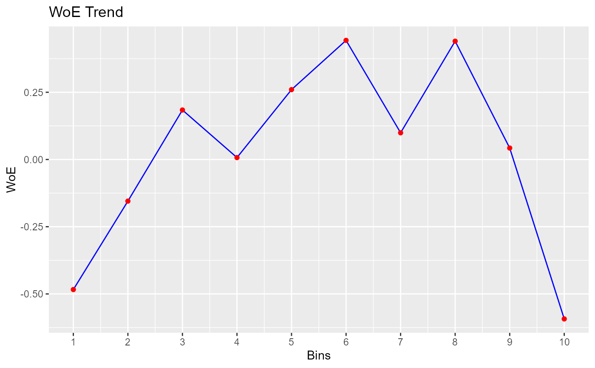

Bin continuous variables using quantiles
rbin_quantiles(data = NULL, response = NULL, predictor = NULL, bins = 10) # S3 method for rbin_quantiles plot(x, ...)
| data | A |
|---|---|
| response | Response variable. |
| predictor | Predictor variable. |
| bins | Number of bins. |
| x | An object of class |
| ... | further arguments passed to or from other methods. |
A tibble.
bins <- rbin_quantiles(mbank, y, age, 10) bins#> Binning Summary #> ----------------------------- #> Method Quantile #> Response y #> Predictor age #> Bins 10 #> Count 4521 #> Goods 517 #> Bads 4004 #> Information Value 0.12 #> #> #> # A tibble: 10 x 6 #> cut_point bin_count good bad woe iv #> <chr> <int> <int> <int> <dbl> <dbl> #> 1 < 29 410 71 339 -0.484 0.0255 #> 2 < 31 313 41 272 -0.155 0.00176 #> 3 < 34 567 55 512 0.184 0.00395 #> 4 < 36 396 45 351 0.00712 0.00000443 #> 5 < 39 519 47 472 0.260 0.00701 #> 6 < 42 431 33 398 0.443 0.0158 #> 7 < 46 449 47 402 0.0993 0.000942 #> 8 < 51 521 40 481 0.440 0.0188 #> 9 < 56 445 49 396 0.0426 0.000176 #> 10 >= 56 470 89 381 -0.593 0.0456# plot plot(bins)